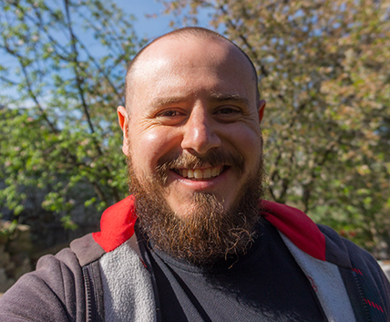

Serg Khlobystov

Summary
Hi, I'm Serhii, a passionate web developer with a strong focus on creating modern, functional, and visually appealing websites. I specialize in front-end and back-end development, ensuring seamless user experiences and high-performance web applications.
Education
I earned a Bachelor's degree followed by a Specialist degree in Electronic Engineering from the Pryazovskyi State Technical University, studying from 2002 to 2007.
Work Experience
-
Electronics Engineer
Magma Factory | 2007 – 2008
- Developed and maintained electronic systems and equipment.
- Diagnosed and repaired technical issues, ensuring optimal performance.
-
Photographer & Graphic Designer
Positive Photo Studio | 2009 – 2012
- Conducted professional photo shoots and post-processing.
- Created photo designs, collages, and promotional materials.
- Developed branding and graphic content for clients.
-
Web Designer & Developer
City Sites (Development Department) | 2012 – 2015
- Designed UI/UX for websites and mobile applications.
- Developed front-end layouts and interactive elements.
- Coded and optimized web pages for performance and usability.
-
Freelance Designer & Content Creator
Self-Employed | 2015 – Present
- Created UI/UX designs, branding, and graphic content.
- Produced video designs and multimedia content.
- Developed engaging content for websites and social media.
Skills
- Customer service: ⭐️⭐️⭐️⭐️
- Work in Team: ⭐️⭐️⭐️⭐️⭐️
- Organizational skills: ⭐️⭐️⭐️
Other